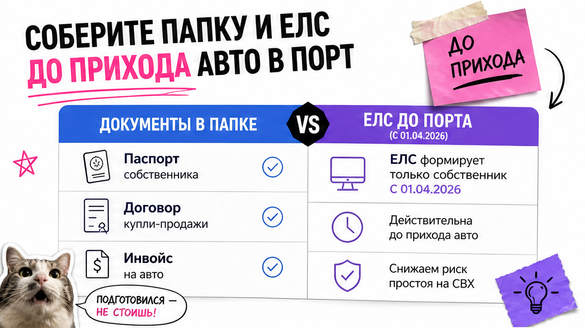
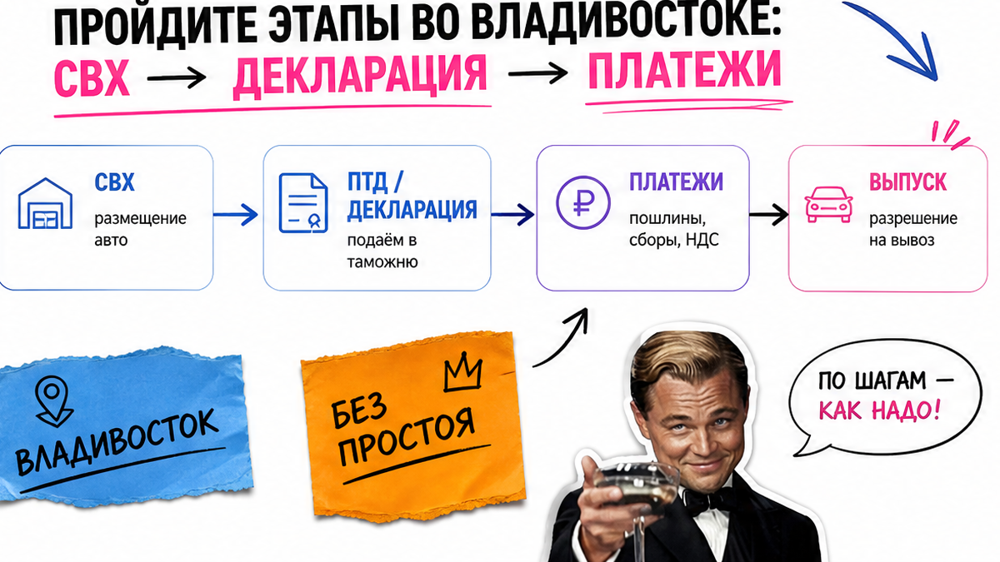
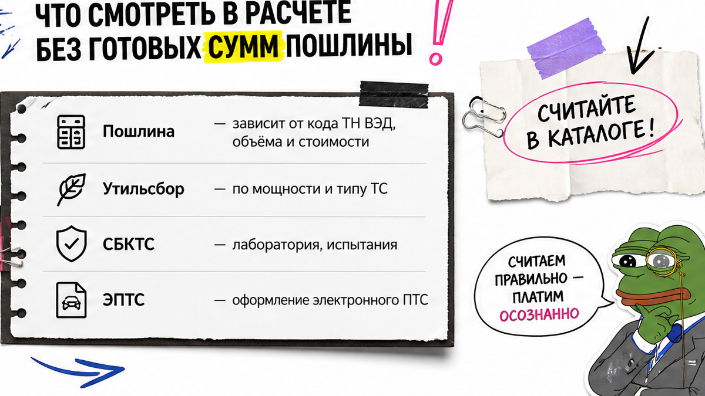

Игорь из Тюмени уже перевёл депозит за кроссовер из Китая. Трекер показал "порт Владивосток" – он написал жене "через неделю машина дома". Документы наполовину на посредника, прописки в ДФО нет, ЕЛС пустой. Боль новичка простая: страх сломать процесс, растаможка кажется "только для брокеров". Ниже – чек-лист этапов через Владивосток: что собрать до порта, как не купить простой на складе и когда авто реально готово.
Коротко по делу: Порт – не финиш, а старт счётчика платного СВХ. Цепочка: папка документов и свой ЕЛС → СВХ → декларация (ПТД) и платежи → выпуск → СБКТС → ЭПТС со статусом "действующий". Без прописки в ДФО заранее выберите транзит или подтверждение пребывания. Готовых сумм пошлин в статье нет – точный расчёт берите в каталоге Авто-Сейлс.
На пальцах: СВХ – платный склад временного хранения у таможни; ПТД – пассажирская декларация для личного авто, не "коммерческая партия"; ЕЛС – ваш лицевой счёт на таможне, куда кладут деньги под платежи; СБКТС – заключение лаборатории о безопасности; ЭПТС – электронный паспорт ТС. Мы во Владивостоке ведём такие заказы каждый день и видим одну и ту же ловушку: люди путают трек контейнера с готовностью к учёту.
Конкуренты в выдаче любят "посчитать растаможку за 5 минут" с красивыми цифрами. На практике чаще ломаются развилка ДФО/транзит и чей ИНН на платежах. С 1 апреля 2026 добровольно пополнить чужой ЕЛС по сути нельзя: плательщик должен совпасть с владельцем счёта.

Типичная ошибка – начинать документы, когда машина уже на СВХ. Каждый день хранения капает. Делайте папку заранее, как рюкзак перед походом: лучше лишний скан, чем простой.
Сделайте: закрыть документы и ЕЛС до прихода контейнера. Не делайте: оставлять развилку ДФО/транзит "на потом" и кидать деньги на чужой счёт "так быстрее".
Посты Владивостокской таможни оформляют авто для личного пользования жителям ДФО и тем, кто временно пребывает на его территории. Если прописки нет – не паникуйте в порту: заранее зафиксируйте транзит в регион прописки или легальное подтверждение пребывания. В реальном проекте Игоря именно отсутствие этой развилки съело три дня и нервы семьи.

После порта машина едет на СВХ. Дальше – сверка VIN и документов, подача ПТД (сами или через представителя из реестра), оплата начислений с ЕЛС и выпуск. На практике "стандартные" случаи часто укладываются примерно в 1–15 дней в зависимости от пакета; в живых отчётах встречались оформление около 10 дней, лаборатория 1–2 дня и ожидание ЭПТС до примерно 7 рабочих дней. Это ориентиры, не гарантия "под ключ".
Схема станций:
Порт Владивосток → СВХ (платный) → сверка VIN/документов → ПТД → платежи с ЕЛС → выпуск → лаборатория/СБКТС → ЭПТС "действующий" → ОСАГО и учёт/автовоз
| Станция | Что происходит | Что проверить | Типичный сбой |
|---|---|---|---|
| СВХ | Хранение до выпуска | Дата размещения, тариф по дням | Пустая папка = простой |
| ПТД | Декларация физлица | ФИО, ИНН, право распоряжения | Документы не на покупателя |
| Платежи | Списание с ЕЛС | Остаток и совпадение ИНН | Чужой платёж "завис" |
| Выпуск | Таможня выпускает ТС | Подтверждение выпуска | Путают выпуск с "можно в ГИБДД" |
Сделайте: вести статус по станциям и сразу закрывать вопросы таможни. Не делайте: обещать семье дату приезда по треку контейнера – порт ещё не выпуск.

Вопрос "сколько стоит растаможка авто из Китая" законный. Ответ без магии: сумма зависит от стоимости, возраста, объёма/мощности, статуса физлица и тарифов на дату оформления. В статье мы не публикуем готовые цифры пошлин и утильсбора как калькулятор – это редакционное правило Авто-Сейлс. Иначе через неделю цифра устареет, а вы уже успеете заложить её в бюджет.
Проверьте состав, а не чужой скрин "у знакомого вышло столько":
Например, если брокер кидает "итого как у соседа" без разбивки и без вашей комплектации – это не расчёт. Актуальную цифру по конкретной машине берите в каталоге Авто-Сейлс или уточняйте в Telegram avtosales125.
Сделайте: требовать разбивку статей и расчёт под ваш VIN/комплектацию. Не делайте: верить универсальным "калькуляторам за 5 минут" из выдачи.
Задержки почти всегда покупают заранее – дырой в папке. Расхождение VIN и стоимости, цепочка оплат не на конечного покупателя, пустой ЕЛС, СВХ далеко от лаборатории, статус ЭПТС ещё не "действующий", а уже запись в ГИБДД.
Сделайте: закрывать красные флаги до порта. Не делайте: "самим за выходные без пакета" – самому можно, но новичок чаще ломается на компетенции поста, ЕЛС и лаборатории. Брокер ускоряет, когда папка уже собрана; он не волшебник при хаосе.
Отдельно про Китай vs Корея/Япония ощущением: хаб тот же – Владивосток, но документы сделки и логистика из Китая чаще "длиннее по бумагам". Не сравнивайте сроки "у друга из Кореи" один в один с вашим китайским контейнером.
Критерий успеха простой. Машина готова не когда трекер пишет "порт", а когда есть выпуск, СБКТС, ЭПТС в статусе "действующий", совпадение VIN везде и понятный план учёта/отправки. Статус ЭПТС смотрите на портале СЭП (dp.elpts.ru) до поездки в ГИБДД.
Если отметили все шесть пунктов – можно писать семье реалистичную дату. Если нет – ещё рано радоваться трекеру.
Сделайте: пройти мини-чек перед отправкой автовозом. Не делайте: ставить авто на учёт "на авось", пока ЭПТС не действующий.
Первый результат без офиса и без "коллектива разработчиков": вы сможете заполнить личный чек-лист на одну страницу и получите понятный критерий готовности авто. Распечатайте или сохраните в заметках:
Нет времени собирать развилку и папку сами – посмотрите актуальный расчёт и сопровождение через Владивосток в каталоге Авто-Сейлс. Мы закрываем цепочку от документов до выдачи без обещаний "за 5 минут".
Материал проверен: редакция Авто-Сейлс – эксперты по авто под заказ из Японии, Кореи и Китая.
Достоверность: этапы и компетенция сверены с разъяснением Приморской транспортной прокуратуры по ДФО, FAQ Дром по ввозу из Китая, материалами по ЕЛС с 01.04.2026 и порталом статуса ЭПТС (СЭП); готовые суммы пошлин не публикуем – актуальный расчёт в каталоге на дату обращения.
Ориентир по станциям: документы и ЕЛС → СВХ → ПТД и платежи → выпуск → СБКТС → ЭПТС → учёт/отправка. Не сжимайте всё в "один шаг в порту". Отмечайте галочки по списку выше.
Хаб часто тот же – Владивосток. Разница в документах сделки, сроках моря и привычных ловушках пакета. Не копируйте чужой корейский тайминг один в один: сверьте свой чек-лист и ветку ДФО/транзит.
Да, если сами тянете ПТД, ЕЛС и лабораторию. Новичку безопаснее собрать папку по чек-листу и взять сопровождение на развилке ДФО и платежах. "Сам за выходные" чаще заканчивается простоем на СВХ.
Смотрите состав статей (пошлина, утиль, СВХ, лаборатория, доставка), затем просите расчёт под вашу комплектацию в каталоге Авто-Сейлс. Не закладывайте бюджет по скрину из чужого калькулятора.
После выпуска, СБКТС и ЭПТС со статусом "действующий", плюс совпадение VIN. Проверьте статус на портале СЭП, затем ОСАГО и ГИБДД. Порт в трекере – ещё не готовность.
До прихода авто выберите таможенный транзит в регион прописки или подтверждение временного пребывания. Не ждите сюрприза на СВХ – зафиксируйте путь заранее.